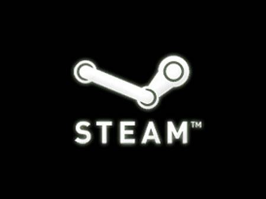
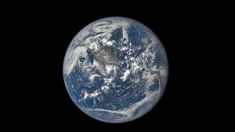

Интересные факты о Steam
В Steam 2.0 был несколько изменён пользовательский интерфейс и интегрирована система мгновенного обмена сообщениями с друзьями. В конце 2003 года Valve объявила о своих планах закрытия WON и обязательной установки Steam для онлайн-игр Valve. Это вызвало гнев многих игроков, которые затем создали WON2 в качестве замены. 26 июля 2004 года World Opponent Network была закрыта и заменена Steam[12]
В августе 2006 года начался переход к Steam 3.0. Вначале был изменён дизайн официального сайта, а затем, в декабре, значительно переработан и внешний вид программы. Тона́ оформления программы были изменены с серо-зелёного на тёмно-серый. Также был изменён формат скинов, в результате скины для старой (второй) версии перестали работать. Следующий шаг последовал в августе 2007 года — вышла первая бета-версия сервиса Steam Community, позволявшего игрокам, в частности, общаться и устраивать состязания; релиз Steam Community состоялся в сентябре.
 